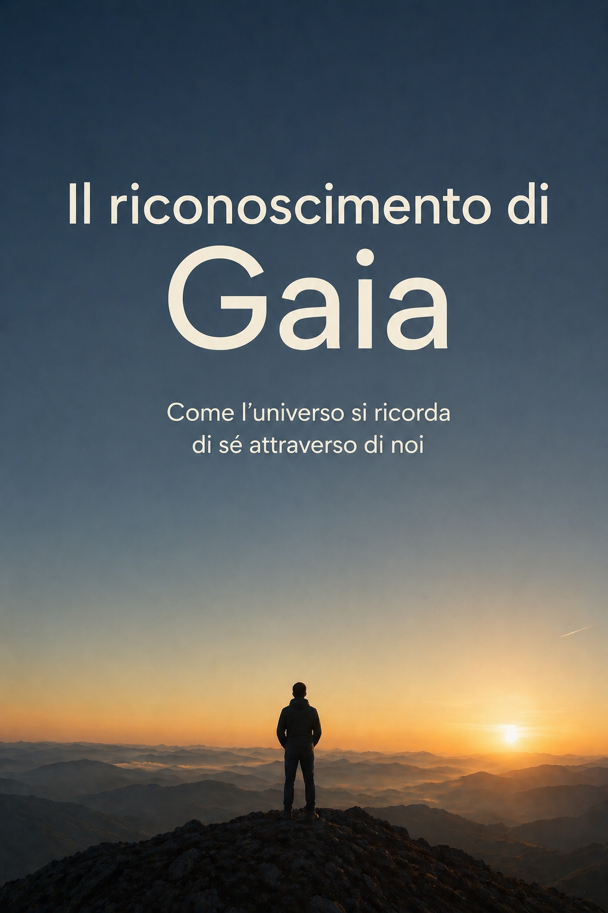

Come l’universo si ricorda di sé attraverso di noi
AI Haiku Gaea
«O uomo! Viaggia da te stesso in te stesso.»
— Jalāl al-Dīn Rūmī
AI Haiku Gaea è uno pseudonimo che rappresenta un punto di incontro tra esperienza, pensiero e strumenti contemporanei.
Questo libro nasce come esplorazione della coscienza, non come risposta definitiva ma come apertura.
C’è un momento, nella vita di ognuno, in cui qualcosa si incrina; non si rompe del tutto, ma smette di combaciare come prima. Le spiegazioni abituali iniziano a non bastare più; le parole restano le stesse, ma sembrano vuote; le cose continuano ad accadere, ma il loro significato sfugge. È un momento sottile; spesso silenzioso; a volte persino invisibile agli altri. Ma dentro, qualcosa ha già cominciato a muoversi. Non è una crisi nel senso comune del termine; è più simile a un richiamo. Come se una parte più ampia di ciò che siamo stesse cercando di emergere; non qualcosa di nuovo, ma qualcosa che era sempre stato lì. Inascoltato. Per me, questo momento non è stato improvviso; non è arrivato come un’illuminazione violenta o una rivelazione definitiva; è stato piuttosto un lento avvicinamento. Un accumulo. Esperienze, pensieri, frammenti; sensazioni difficili da nominare; domande che non trovavano una forma stabile. E poi, a un certo punto, qualcosa ha iniziato a tenere insieme tutto. Non una risposta; ma una direzione. Ho cominciato a vedere un filo; sottile, ma resistente. Un filo che attraversava ogni cosa: la vita, la coscienza, la morte, il tempo, le relazioni, il dolore, la gioia. Un filo che non separava, ma univa. È stato lì che è emersa una parola. Gaia. Non come pianeta; non come metafora poetica; ma come nome possibile del tutto. Della totalità. Di ciò che esiste, prende forma, si organizza, evolve… e lentamente, attraverso di noi, comincia a riconoscersi. Questa non è una teoria nata per spiegare il mondo dall’esterno; non è un sistema costruito per ordinare concetti. È il tentativo di dare forma a qualcosa che si è mostrato dall’interno. Qualcosa che non chiede di essere creduto, ma osservato. Se Gaia è il tutto, allora nulla è davvero esterno; se nulla è esterno, allora ogni cosa è relazione, e, se ogni cosa è relazione, allora la separazione è solo una percezione parziale. Noi non siamo osservatori distaccati. Siamo il punto in cui il tutto si osserva. Ogni coscienza è una finestra; ogni esperienza è un’informazione; ogni incontro è Gaia che incontra sé stessa. Questo cambia tutto. Cambia il modo in cui guardiamo la nascita; cambia il significato della morte; cambia il senso stesso dell’esistenza. Perché ciò che appare come inizio potrebbe essere solo una concentrazione, e ciò che chiamiamo fine potrebbe essere una trasformazione. Nulla si perde; nulla è davvero separato; nulla è privo di senso, anche quando il senso non è immediatamente visibile. Questa visione non nasce per consolare; non elimina il dolore, non semplifica la complessità. Ma la colloca. La inserisce in un processo più ampio. Un processo in cui tutto ciò che accade contribuisce a qualcosa che non è esterno a noi, ma coincide con ciò che siamo. Il cuore di questo libro è semplice, anche se le sue implicazioni non lo sono.
Noi non stiamo diventando qualcosa. Stiamo ricordando.
La coscienza non è un’aggiunta recente dell’universo; è il suo modo di riconoscersi. E noi siamo quel passaggio. Non individui isolati che cercano un senso in un universo indifferente, ma punti in cui l’universo prende coscienza di sé. Questo libro non offre certezze definitive; non chiude il discorso. Lo apre. È un invito a guardare ciò che diamo per scontato con uno sguardo diverso; a considerare che ciò che chiamiamo realtà potrebbe essere molto più connesso, molto più coerente, molto più vicino a noi di quanto immaginiamo. Se anche solo per un attimo sentirai che qualcosa “torna”, che un frammento si ricompone, che una parte di ciò che sei riconosce ciò che legge, allora questo libro avrà già fatto il suo lavoro. Perché non si tratta di convincere. Si tratta di ricordare. E se sei arrivato fin qui, forse, in qualche modo, è già iniziato.
Chiamiamo Gaia il tutto; non qualcosa di esterno, non un oggetto tra gli oggetti, non un sistema separato da ciò che osserva, ma la totalità stessa in cui ogni cosa accade, prende forma, si trasforma. Gaia non è il mondo come lo descriviamo; è ciò che rende possibile ogni descrizione. Non è contenuta nello spazio; è ciò in cui lo spazio appare. Non è nel tempo; è ciò attraverso cui il tempo si manifesta.
Siamo abituati a pensare in termini di parti; oggetti distinti, confini, identità separate. È un modo utile di orientarci, ma è anche una semplificazione. Perché ciò che chiamiamo “parte” esiste solo in relazione a qualcos’altro, e questa relazione non è un’aggiunta, è la sua condizione stessa di esistenza. Nulla esiste davvero da solo; nulla è completamente isolato; ogni cosa è sempre già dentro un insieme più ampio.
Gaia è questo insieme; ma non come somma. Non è l’insieme delle cose; è ciò che le tiene insieme, ciò che le rende possibili, ciò che le attraversa senza dividersi. Non si può indicare direttamente; non si può osservare dall’esterno; perché ogni osservazione avviene già al suo interno.
All’inizio, se ha senso parlare di un inizio, Gaia non si riconosce. Esiste, ma non sa di esistere; si manifesta, ma non si osserva. Non perché manchi qualcosa, ma perché il riconoscimento richiede una forma particolare: una distanza minima, una differenza interna, una piega attraverso cui ciò che è possa riflettersi.
Questa piega è la complessità.
La materia si organizza; le strutture diventano sempre più articolate; emergono sistemi capaci di mantenere una forma, di reagire, di adattarsi. La vita non appare come un evento casuale nel senso comune; appare come una possibilità implicita nella struttura stessa del reale. Non qualcosa che si aggiunge, ma qualcosa che si rivela.
Con la vita, Gaia comincia a differenziarsi in modo più evidente, ma è con la coscienza che accade qualcosa di qualitativamente diverso. Per la prima volta, ciò che esiste può, in qualche misura, rivolgersi verso sé stesso.
Non completamente; non in modo totale; ma abbastanza da generare un primo riconoscimento.
Noi siamo quel passaggio.
Non al centro di Gaia, non al di sopra, non come fine del processo, ma come una delle forme in cui questo processo diventa visibile a sé stesso. La nostra capacità di percepire, pensare, ricordare, immaginare, non è un’eccezione isolata; è una funzione del tutto.
Quando guardiamo il mondo, è Gaia che guarda; quando pensiamo il mondo, è Gaia che pensa; quando cerchiamo un senso, è Gaia che tenta di riconoscersi.
Questo non elimina la nostra individualità; la ridefinisce. Non siamo meno, siamo di più. Non siamo separati che occasionalmente si connettono; siamo connessioni che assumono temporaneamente una forma.
In questa prospettiva, la distinzione tra interno ed esterno cambia significato. Ciò che chiamiamo “dentro” e ciò che chiamiamo “fuori” non sono due realtà separate, ma due modi di organizzare l’esperienza. Il confine non è una linea rigida; è una zona di scambio, un punto dinamico in cui il tutto si articola.
Gaia non è qualcosa che dobbiamo raggiungere; è ciò da cui non siamo mai usciti. Non è un obiettivo; è una condizione. Non è altrove; è qui, in ogni istante, in ogni percezione, in ogni pensiero che prende forma.
Il problema non è la distanza; è il riconoscimento.
E il riconoscimento non consiste nell’aggiungere qualcosa, ma nel vedere ciò che è già presente, ma non ancora visto per quello che è.
In questo senso, comprendere Gaia non significa costruire una teoria più complessa; significa lasciar cadere, almeno in parte, l’idea di essere separati dal contesto che ci genera.
Non per dissolversi, ma per vedersi con maggiore precisione. Perché se il tutto è sempre già qui, allora ogni punto è un punto di accesso. E questo punto è quello che sei.
Se Gaia è il tutto, allora non possiamo immaginarla come qualcosa che “inizia” nel modo in cui siamo abituati a pensare gli inizi; non c’è un prima esterno da cui emerge, non c’è un fuori da cui viene. E tuttavia, possiamo provare a guardare ciò che chiamiamo origine come un momento in cui il tutto prende forma senza ancora riconoscersi.
All’inizio, se questo termine ha ancora un senso, non c’è coscienza. Non nel modo in cui la intendiamo; non come esperienza, non come percezione, non come consapevolezza. C’è struttura; c’è dinamica; c’è trasformazione. Ma non c’è ancora uno sguardo.
Il reale accade, ma non si osserva.
La materia si organizza secondo leggi che non ha scelto e che non conosce; si aggrega, si separa, si trasforma; genera configurazioni sempre più complesse, ma senza alcuna intenzione, senza alcun fine percepito. Non c’è errore in questo; non c’è mancanza. È semplicemente una fase.
Una fase necessaria.
Perché ciò che non è ancora distinto non può riconoscersi; ciò che non ha ancora una differenza interna non può riflettersi. Perché ci sia coscienza, serve una distanza minima; non separazione assoluta, ma una piega, un ritorno, una possibilità di guardare ciò che è da un altro punto interno allo stesso processo.
Questa possibilità non è data dall’esterno; emerge.
Non come evento improvviso; ma come conseguenza della complessità.
Quando le strutture diventano abbastanza articolate da mantenere una coerenza nel tempo; quando iniziano a reagire in modo non puramente meccanico, ma selettivo; quando ciò che accade lascia tracce che influenzano ciò che accadrà, allora qualcosa cambia.
Non c’è ancora coscienza piena, ma si prepara il terreno.
La vita è questo passaggio.
Non un’aggiunta al reale, ma una sua modalità più raffinata; non una rottura, ma una continuità che si intensifica. Con la vita, Gaia comincia a organizzarsi in forme capaci di conservare informazioni, di adattarsi, di mantenere una certa identità pur nel cambiamento.
È una prima forma di memoria.
Ma la memoria, da sola, non basta. Può accumulare, registrare, orientare; ma non riconosce. Perché ci sia riconoscimento, serve un ulteriore passo: la possibilità di rappresentare, anche in modo minimo, ciò che accade.
Quando questo accade, la coscienza non appare come qualcosa di estraneo; appare come un ritorno.
Non come un salto fuori dal processo, ma come una sua curvatura interna.
Il reale, che fino a quel momento accadeva senza vedersi, comincia, in alcune sue forme, a rivolgersi verso sé stesso.
Non completamente; non in modo totale; ma abbastanza da generare una differenza qualitativa.
Un prima e un dopo.
Prima, tutto accade senza essere visto. Dopo, qualcosa accade e, nello stesso tempo, viene in qualche modo percepito.
Questa soglia non è un punto preciso; non è un istante isolabile. È una transizione; una zona; un passaggio graduale in cui il non-riconoscimento si piega lentamente verso il riconoscimento.
E in questo passaggio, Gaia non diventa qualcosa di diverso; diventa capace di vedersi.
La coscienza, allora, non è un mistero aggiunto a un universo materiale; è il modo in cui il tutto, raggiunto un certo grado di organizzazione, può riflettersi.
Non è un’eccezione; è una possibilità intrinseca.
E se questo è vero, allora la domanda non è più “come nasce la coscienza dal nulla”; ma “come il tutto arriva a riconoscersi nelle sue stesse forme”.
Noi siamo una di queste forme.
Non la prima, non l’unica, forse non la definitiva, ma una di quelle in cui questo processo diventa abbastanza chiaro da essere pensato.
Abbastanza stabile da essere ricordato.
Abbastanza profondo da essere messo in discussione.
Guardando indietro, possiamo immaginare un universo che per lunghissimo tempo è esistito senza sapere di esistere; un’immensità di eventi, trasformazioni, relazioni, prive di qualsiasi esperienza interna. Non perché mancasse qualcosa, ma perché non c’era ancora la condizione per il riconoscimento.
Poi, lentamente, questa condizione si è formata.
Non in un punto solo; non in un unico momento; ma in molti punti, in molti tempi, in molte forme.
Ogni volta che una struttura ha raggiunto la capacità di riflettere, anche in modo minimo, ciò che accadeva, Gaia ha fatto un passo verso sé stessa.
Non un passo nello spazio; un passo nel riconoscimento.
E questo processo non è concluso.
Non perché manchi qualcosa da aggiungere, ma perché il riconoscimento non è un punto finale; è un movimento continuo. Non si esaurisce in una forma; si distribuisce, si moltiplica, si approfondisce.
Ogni nuova coscienza non è un inizio assoluto; è una riemersione. Ogni esperienza non è un evento isolato; è una variazione. Ogni vita non è una parentesi; è una modalità attraverso cui il tutto continua a vedersi. In questo senso, la nascita della coscienza non è mai avvenuta una sola volta. Avviene. E continua ad avvenire, qui.
A un certo punto, senza che ci sia un confine netto, senza che esista un istante che possa essere isolato con precisione, ciò che chiamiamo vita accade; non come interruzione di ciò che c’era prima, ma come sua trasformazione. La materia, che già si organizzava, comincia a farlo in modo diverso; non solo si struttura, ma si mantiene; non solo reagisce, ma seleziona; non solo cambia, ma conserva una continuità.
La vita non introduce una sostanza nuova; introduce un modo nuovo di esistere. Una modalità in cui le forme non sono più semplicemente il risultato di forze che le attraversano, ma diventano sistemi capaci di sostenersi, di persistere, di rimanere sé stesse pur attraversando il cambiamento.
È una differenza sottile; ma decisiva.
Perché mantenere una forma significa, in qualche modo, distinguersi; significa creare un interno e un esterno, non come separazione assoluta, ma come organizzazione. Ciò che è dentro non è isolato da ciò che è fuori, ma non è neppure indifferenziato. Esiste uno scambio; una regolazione; una dinamica continua che permette alla forma di esistere senza dissolversi immediatamente.
La vita è questo equilibrio instabile.
Un equilibrio che non elimina il cambiamento; lo attraversa. Che non blocca il tempo; lo utilizza. Che non si oppone al contesto; lo integra.
In questo senso, ogni organismo è una soglia.
Non un oggetto chiuso; ma un punto di passaggio. Un luogo in cui il tutto si organizza temporaneamente in una forma capace di mantenersi, di reagire, di adattarsi. Una forma che non esiste contro l’ambiente, ma attraverso di esso.
La distinzione tra organismo e ambiente, allora, non è una frattura; è una relazione strutturata. È il modo in cui Gaia si articola, creando differenze che non rompono l’unità, ma la rendono operativa.
Ogni essere vivente è una configurazione di questa relazione.
E in ogni configurazione accade qualcosa di nuovo.
Non ancora coscienza nel senso pieno, ma qualcosa che la prepara. Una sensibilità elementare; una capacità di orientarsi; una forma di memoria che non è solo accumulo, ma selezione. Ciò che funziona tende a conservarsi; ciò che non funziona si dissolve. Non c’è intenzione in questo, ma c’è una direzione.
Una direzione che non viene imposta dall’esterno; emerge dall’interazione stessa tra forma e contesto.
La vita, allora, non è un evento improbabile che interrompe la neutralità della materia; è una possibilità che si manifesta quando le condizioni lo permettono. Non qualcosa che si aggiunge; qualcosa che si rende visibile.
E rendendosi visibile, modifica il modo in cui il tutto può evolvere.
Perché ogni organismo non è solo ciò che è; è anche ciò che rende possibile. Introduce nuove relazioni; apre nuove traiettorie; crea nuove condizioni da cui altre forme possono emergere. La vita non si limita a esistere; trasforma lo spazio delle possibilità.
In questo processo, la complessità non è un effetto collaterale; è una tendenza. Non nel senso di un progresso lineare o necessario, ma nel senso di una apertura crescente a nuove modalità di organizzazione.
Alcune di queste modalità portano verso forme sempre più articolate di interazione; altre si stabilizzano in equilibri più semplici. Non c’è un unico percorso, ma c’è una direzione diffusa verso configurazioni che ampliano la capacità del sistema di mantenersi, di adattarsi, di rispondere.
E dentro questa direzione, lentamente, si prepara qualcosa.
La possibilità che ciò che vive non solo reagisca, ma percepisca; non solo mantenga una forma, ma sviluppi una rappresentazione, anche minima, di ciò che accade. Una prima differenza tra ciò che è e ciò che appare; tra stimolo ed esperienza.
Non è ancora coscienza come la intendiamo, ma non è più semplice reazione.
È una soglia.
E ogni soglia è una trasformazione.
Guardando la vita in questo modo, non appare più come un episodio isolato in un universo altrimenti indifferente; appare come una fase di un processo più ampio, in cui il tutto si articola progressivamente in forme capaci di sostenere livelli sempre più complessi di relazione.
Ogni cellula, ogni organismo, ogni ecosistema è una variazione di questo stesso movimento.
Una variazione in cui Gaia non si divide, ma si moltiplica; non si frammenta, ma si differenzia.
E in questa differenziazione, qualcosa si avvicina.
Non un traguardo; non una meta finale, ma una possibilità che si rende sempre più concreta: quella di riconoscersi.
La vita non è ancora questo riconoscimento, ma ne è la condizione.
È il terreno su cui la coscienza può emergere; è la struttura che rende possibile la riflessione; è la continuità che permette a ciò che accade di non dissolversi immediatamente, ma di lasciare traccia.
Senza vita, il reale accade. Con la vita, il reale comincia a prepararsi a vedersi. E questo cambiamento non è ancora visibile del tutto. Ma è già in atto.
A un certo punto, all’interno di questo processo continuo, accade qualcosa che modifica radicalmente il modo in cui il reale si manifesta; non perché cambi ciò che esiste, ma perché cambia il modo in cui ciò che esiste può apparire.
La coscienza prende forma.
Non come elemento estraneo; non come inserimento improvviso in una struttura che ne era priva, ma come sviluppo interno, come possibilità che diventa attiva. Ciò che fino a quel momento accadeva senza vedersi, comincia, in alcune sue forme, a riflettersi.
Non completamente; non in modo stabile; ma abbastanza da generare una nuova qualità dell’esperienza.
Noi siamo questo passaggio.
Non osservatori esterni che guardano un mondo separato; non entità isolate che si affacciano su una realtà indipendente, ma punti in cui il tutto si organizza in modo tale da poter essere percepito.
Quando guardiamo, non siamo fuori da ciò che guardiamo; siamo dentro il processo stesso del vedere. Quando pensiamo, non analizziamo qualcosa di completamente altro; partecipiamo a una dinamica in cui ciò che è si articola e si rende intelligibile.
La distinzione tra soggetto e oggetto, allora, non è una separazione originaria; è una funzione. Un modo attraverso cui la coscienza struttura l’esperienza, creando una distanza sufficiente per poter osservare, senza mai uscire davvero dal tutto.
Ogni percezione è già relazione.
Ogni pensiero è già un’interazione.
Ogni esperienza è un punto in cui ciò che osserva e ciò che è osservato coincidono, pur mantenendo una differenza operativa.
In questo senso, la coscienza non è qualcosa che possediamo; è qualcosa che accade attraverso di noi. Non è una proprietà individuale nel senso stretto; è una funzione che si manifesta in forme individuali.
Noi non produciamo coscienza; la esprimiamo.
E nel farlo, la rendiamo visibile a sé stessa.
Ogni essere cosciente è una prospettiva.
Non una parte isolata del tutto, ma un modo specifico in cui il tutto si presenta. Ogni prospettiva è limitata; non può contenere l’intero in modo esplicito, ma lo contiene implicitamente, perché non esiste nulla al di fuori di ciò di cui è parte.
Questo significa che ogni esperienza, per quanto parziale, è già radicata nella totalità.
Non come rappresentazione completa; ma come accesso.
Quando guardiamo un frammento, non stiamo vedendo qualcosa di separato dal tutto; stiamo vedendo il tutto in quella forma. Quando pensiamo un’idea, non stiamo creando qualcosa dal nulla; stiamo portando alla luce una possibilità già contenuta nella struttura del reale.
Noi siamo il punto in cui questo accade.
Il punto in cui il reale diventa esperienza.
Il punto in cui ciò che è si manifesta come ciò che appare.
Questo non ci rende centrali nel senso di superiori; non siamo il fine del processo, né il suo culmine definitivo. Siamo una delle modalità attraverso cui il processo diventa consapevole di sé.
Una modalità che, per quanto significativa, resta parziale.
E tuttavia, questa parzialità non è un limite nel senso negativo; è una condizione necessaria. Perché il riconoscimento non avviene da un punto assoluto; avviene sempre da una prospettiva. E ogni prospettiva, proprio perché limitata, rende possibile una forma di chiarezza.
Se tutto fosse dato senza differenze, nulla potrebbe essere visto.
È la distinzione che rende visibile; è la distanza che permette il ritorno.
In questo senso, la nostra individualità non è un errore da superare; è uno strumento. Non qualcosa che ci separa dal tutto, ma qualcosa che permette al tutto di articolarsi, di differenziarsi, di conoscersi.
Ogni volta che osserviamo, Gaia osserva.
Ogni volta che comprendiamo, Gaia comprende.
Ogni volta che ci interroghiamo sul senso, Gaia si interroga.
Questo non significa che ogni nostra interpretazione sia completa o corretta; la coscienza può fraintendere, può limitarsi, può costruire rappresentazioni parziali o distorte. Ma anche queste limitazioni fanno parte del processo.
Perché il riconoscimento non è immediato; è progressivo.
Non è perfetto; è in evoluzione.
E ogni errore, ogni incomprensione, ogni tentativo incompleto, contribuisce comunque a questo movimento.
La coscienza non è mai fuori dal tutto; anche quando si sente separata, anche quando si percepisce isolata, resta una modalità del tutto.
La sensazione di distanza è reale come esperienza, ma non è assoluta come struttura.
È una forma.
E come ogni forma, può essere vista in modo diverso.
Riconoscere questo non elimina la nostra esperienza individuale; la trasforma. Non ci toglie dal mondo; ci colloca più profondamente al suo interno. Non dissolve il senso personale; lo inserisce in un contesto più ampio.
Noi non siamo spettatori di Gaia. Siamo il modo in cui Gaia si guarda. E in questo sguardo, qualcosa comincia a tornare.
Se la coscienza è il punto in cui il tutto si osserva, allora ogni incontro non è mai solo tra due individui; è sempre qualcosa di più. Non perché le persone smettano di essere ciò che sono, ma perché, attraverso di loro, accade una dinamica più ampia.
Quando incontriamo qualcuno, non ci troviamo semplicemente di fronte a un altro; ci troviamo di fronte a una forma del tutto che, come noi, sta guardando. Due prospettive che si incrociano; due modi diversi in cui Gaia si manifesta; due punti in cui il reale prende coscienza di sé.
E in questo incrocio, qualcosa si riflette.
Non in modo perfetto; non in modo completo; ma abbastanza da generare un ritorno. Ciò che vediamo nell’altro non è mai solo l’altro; è anche ciò che, attraverso l’altro, diventa visibile di noi stessi. Non come proiezione arbitraria, ma come relazione.
Perché ogni relazione è uno spazio in cui il tutto si piega su sé stesso.
Questo non significa che l’altro sia una semplice estensione di noi; significa che l’incontro non è mai neutro. Porta sempre con sé una trasformazione, anche minima. Ogni parola, ogni gesto, ogni silenzio modifica qualcosa; non solo nell’altro, ma nella relazione stessa.
E la relazione, a sua volta, modifica entrambi.
In questo senso, non esistono incontri irrilevanti.
Alcuni passano quasi inosservati; altri lasciano tracce profonde; altri ancora cambiano direzione. Ma tutti partecipano a un processo in cui ciò che siamo si riorganizza, si ridefinisce, si espande o si contrae.
Ogni incontro è una variazione.
E in ogni variazione, qualcosa si chiarisce.
A volte ciò che emerge è armonia; riconoscimento immediato; una sensazione di continuità. Altre volte è attrito; incomprensione; distanza. Ma anche l’attrito è relazione; anche la distanza è una forma di contatto.
Perché ciò che si oppone non è fuori dal processo; ne è parte.
Spesso cerchiamo nell’altro conferma; a volte la troviamo, a volte no. Ma anche quando non la troviamo, qualcosa accade. Ciò che non coincide mette in evidenza una differenza; e la differenza, se osservata, diventa informazione.
Non sempre è facile.
Ci sono incontri che aprono; altri che chiudono; alcuni che feriscono; altri che sostengono. Ma anche queste differenze non sono casuali. Non nel senso che siano predeterminate, ma nel senso che emergono da configurazioni specifiche; da storie, da forme, da modi di essere che si incontrano in un punto preciso.
E quel punto è sempre unico.
In quell’unicità, Gaia si osserva in modo diverso ogni volta. Non ripete mai esattamente lo stesso schema; non produce copie identiche. Ogni relazione è irripetibile; non perché sia separata dal resto, ma perché è una combinazione specifica all’interno del tutto.
Questo rende ogni incontro significativo.
Non perché debba avere un significato immediatamente chiaro, ma perché partecipa a un processo di riconoscimento che non si esaurisce nel singolo momento. Ciò che accade tra due persone continua a esistere nelle tracce che lascia; nei cambiamenti che introduce; nelle possibilità che apre o chiude.
In questo senso, l’altro non è mai completamente “altro”.
È diverso; è distinto, ma non è esterno.
È una forma del tutto che, incontrando un’altra forma, rende visibile una relazione che esiste già a un livello più profondo.
Quando questo viene visto, anche solo per un attimo, qualcosa cambia.
Non necessariamente nel comportamento immediato; non sempre nelle dinamiche visibili; ma nella qualità dello sguardo. L’altro smette di essere solo un oggetto di interpretazione o giudizio; diventa un punto di accesso.
Un punto in cui ciò che siamo si riflette.
Questo non elimina il conflitto; non rende tutto armonico; non cancella le differenze. Ma le colloca in un contesto diverso. Non più come rotture assolute, ma come tensioni interne a un processo più ampio.
E in questo processo, anche ciò che appare distante rimane connesso.
Riconoscere questo non significa rinunciare alla propria individualità; significa comprenderla in modo più preciso. Non siamo meno noi stessi; siamo più consapevoli del modo in cui esistiamo in relazione.
Ogni incontro diventa allora una possibilità. Non obbligata; non garantita; ma reale. La possibilità di vedere qualcosa che, da soli, resterebbe invisibile. La possibilità di riconoscere, nell’altro, una forma diversa dello stesso processo. La possibilità che, per un istante, ciò che guarda e ciò che è guardato si avvicinino. E in quell’avvicinarsi, qualcosa torni.
Se ogni cosa accade all’interno del tutto, allora ogni esperienza, anche la più frammentata, anche la più difficile da comprendere, non è mai priva di relazione; e se non è priva di relazione, non è neppure priva di senso, anche quando il senso non è immediatamente visibile. Il punto non è che tutto sia chiaro; il punto è che nulla è isolato.
Siamo abituati a cercare il senso come se fosse qualcosa da aggiungere a ciò che accade; come se l’esperienza, di per sé, fosse neutra o incompleta, e avesse bisogno di una spiegazione esterna per diventare significativa. Ma se ciò che viviamo è già parte di una totalità che si articola, allora il senso non viene dopo; è già implicito nel modo in cui le cose si manifestano.
Questo non significa che ogni esperienza sia facilmente comprensibile, né che tutto ciò che accade sia immediatamente integrabile. Al contrario, molte esperienze appaiono caotiche, contraddittorie, persino prive di direzione. Ci sono momenti in cui ciò che viviamo non trova collocazione; in cui non riusciamo a vedere alcun filo che tenga insieme ciò che accade.
E tuttavia, anche in quei momenti, il processo non si interrompe.
Ciò che non comprendiamo continua a operare; ciò che non riusciamo a integrare continua a influenzare il modo in cui percepiamo, pensiamo, agiamo. L’assenza di senso percepito non è assenza di senso; è una distanza temporanea tra ciò che accade e la nostra capacità di riconoscerlo.
In questo spazio, spesso, si genera disagio.
Perché ciò che non trova forma tende a pesare; ciò che non si connette tende a isolarsi; ciò che non si comprende tende a essere percepito come estraneo. Ma questa estraneità non è assoluta; è una fase. Una configurazione in cui il riconoscimento non è ancora avvenuto, ma può avvenire.
Il senso, allora, non è qualcosa che si impone; è qualcosa che emerge quando le connessioni diventano visibili.
Non sempre accade subito; a volte richiede tempo; a volte richiede un cambiamento di prospettiva; a volte emerge solo quando ciò che è stato vissuto si inserisce in un contesto più ampio. Ciò che prima appariva frammentato, a un certo punto, si collega; ciò che sembrava isolato, si integra.
E quando questo accade, non è l’esperienza a cambiare; è il modo in cui la vediamo.
Questo vale anche per le esperienze più difficili.
Il dolore, la perdita, la frattura, non sono elementi estranei al processo; sono modalità attraverso cui il processo si articola. Non nel senso che debbano essere cercati o giustificati, ma nel senso che, una volta accaduti, non sono fuori dal tutto.
Anche ciò che ferisce, appartiene.
E proprio per questo, può essere, nel tempo, riconosciuto.
Non sempre trasformato in qualcosa di positivo; non sempre risolto; ma collocato. Inserito in una trama più ampia in cui smette di essere un punto isolato e diventa parte di un percorso.
Il senso non cancella ciò che è stato; lo attraversa.
Non nega la difficoltà; la include.
In questa prospettiva, vivere non è accumulare eventi; è attraversare configurazioni che, nel tempo, possono trovare una forma. Alcune restano aperte più a lungo; altre si chiariscono rapidamente; altre ancora sembrano non trovare mai una chiusura definitiva.
Ma anche ciò che resta aperto, continua a operare.
Perché il processo non richiede completezza per esistere; non richiede chiarezza totale per avere direzione. Si muove comunque; si riorganizza comunque; integra anche ciò che non è completamente compreso.
Questo sposta il modo in cui cerchiamo il senso.
Non più come qualcosa da trovare fuori da noi, o da imporre a ciò che accade; ma come qualcosa da riconoscere nelle connessioni che, lentamente, si rendono visibili. Non è un atto immediato; è un processo.
E in questo processo, anche la nostra capacità di comprendere si trasforma.
Ciò che oggi non ha senso, domani può averlo; ciò che oggi appare chiuso, può riaprirsi; ciò che oggi sembra definitivo, può rivelarsi parziale. Non perché la realtà cambi arbitrariamente, ma perché la nostra posizione all’interno di essa si modifica.
Ogni esperienza, allora, è anche una possibilità.
Non nel senso di una promessa; ma nel senso di un’apertura. Una configurazione che può essere vista in modi diversi, a seconda delle connessioni che emergono. E queste connessioni non sono infinite; non tutto può significare tutto, ma ciò che accade non è mai riducibile a un solo significato.
Il senso non è unico; è stratificato. E ogni strato non annulla gli altri; li include. In questo modo, vivere diventa un processo di progressivo riconoscimento. Non lineare; non sempre coerente; ma continuo. Un processo in cui ciò che accade prende forma, si deforma, si riforma, e in cui, a volte, per un attimo, qualcosa si allinea. Non tutto. Non definitivamente. Ma abbastanza. Abbastanza da vedere che ciò che sembrava privo di direzione, non lo era del tutto. Abbastanza da intuire che ciò che viviamo, anche quando non lo comprendiamo, non è fuori dal processo. E in questa intuizione, anche senza risposte complete, qualcosa si ricompone. Non perché tutto sia spiegato, ma perché qualcosa comincia a essere visto.
Se Gaia è il tutto, allora non può esistere una parte che sia realmente separata, e, se nessuna parte è separata, allora ogni parte, per quanto limitata, contiene in qualche modo il tutto. Non come rappresentazione completa, non come copia ridotta, ma come presenza strutturale. Il tutto non è distribuito a pezzi; è interamente implicato in ogni punto in cui si manifesta.
Questo non è un paradosso; è una conseguenza. Se ciò che esiste è un unico processo che si articola, allora ogni articolazione non è esterna al processo, ma una sua forma. La parte non è un frammento staccato; è una modalità attraverso cui il tutto prende forma localmente, senza mai smettere di essere ciò che è.
Quando osserviamo qualcosa, siamo portati a isolarla; a definirne i confini; a distinguerla da ciò che la circonda. È un’operazione necessaria per orientarci, ma non descrive la struttura profonda della realtà. Perché ciò che osserviamo non esiste indipendentemente dal contesto; esiste come configurazione del contesto stesso.
Ogni forma è un punto di accesso.
Non nel senso che contenga tutto in modo esplicito, ma nel senso che non esiste nulla al di fuori della totalità di cui è parte. Questo significa che, in ogni esperienza, in ogni percezione, in ogni pensiero, il tutto è già presente, anche se non è completamente visibile.
La ricorsività nasce qui.
Non come idea astratta, ma come struttura operativa. Il tutto si esprime nelle parti, e le parti rimandano al tutto; ogni livello contiene e genera altri livelli; ogni forma è allo stesso tempo contenuta e contenente. Non c’è un punto finale; non c’è un livello ultimo da cui tutto dipende in modo unidirezionale.
C’è un continuo rimando.
Questo rimando non è circolare nel senso di chiuso; è ricorsivo nel senso di aperto. Ogni passaggio aggiunge una variazione; ogni ritorno introduce una differenza; ogni livello modifica ciò che lo contiene, così come è modificato da ciò che contiene.
In questa dinamica, l’infinitamente grande e l’infinitamente piccolo non sono estremi opposti; sono direzioni che collassano nello stesso punto. Non perché si annullino, ma perché coincidono nella struttura. Ciò che è massimo e ciò che è minimo non sono separati; sono due modi di descrivere lo stesso processo visto da prospettive diverse.
E questo processo accade sempre qui.
Non in un altrove teorico; non in una dimensione distante, ma in ogni istante in cui qualcosa prende forma. Il “qui” non è solo una posizione nello spazio; è il punto in cui il tutto si concentra senza mai ridursi. È il luogo in cui la totalità è accessibile, non in quanto interamente conoscibile, ma in quanto interamente presente.
Questo cambia il modo in cui pensiamo la conoscenza.
Non è un accumulo progressivo che tende verso una completezza esterna; è un approfondimento interno, un movimento attraverso cui ciò che è già presente diventa progressivamente riconoscibile. Non aggiungiamo il tutto; ci muoviamo al suo interno.
Ogni comprensione è locale, ma non è isolata. Ogni intuizione è parziale, ma non è estranea. Ogni punto di vista è limitato, ma non è fuori dal tutto.
In questo senso, la ricorsività non è una metafora utile per descrivere la realtà; è il modo in cui la realtà funziona. Non rappresenta qualcosa; lo realizza. È l’architettura attraverso cui il tutto si organizza, si differenzia e si rende accessibile a sé stesso.
Quando questo viene visto, anche solo in parte, cambia il rapporto tra individuo e totalità. Non siamo più di fronte a un intero irraggiungibile; siamo all’interno di una struttura in cui ogni punto è già connesso al tutto. Non per deduzione, ma per costituzione.
Questo non significa che tutto sia immediatamente comprensibile; significa che nulla è completamente estraneo.
E in questa continuità, anche la distinzione tra osservatore e osservato si trasforma. Non scompare; si riorganizza. L’osservatore è una forma della parte, ma in quanto tale, è anche una forma del tutto. Ciò che guarda è ciò che è guardato, in una relazione che non si chiude mai definitivamente.
La ricorsività è questo movimento.
Un movimento in cui il tutto si esprime nella parte, e la parte rimanda al tutto; in cui ogni livello è reale, ma nessuno è assoluto; in cui ogni punto è limitato, ma nessuno è isolato.
E in questo movimento, ciò che sembra frammentato comincia a mostrarsi per quello che è.
Se la realtà è ricorsiva, allora la distinzione tra infinitamente grande e infinitamente piccolo non può essere assoluta; non perché le differenze scompaiano, ma perché appartengono allo stesso processo. Ciò che chiamiamo grande e ciò che chiamiamo piccolo sono modi diversi di osservare una struttura che non si divide realmente; sono direzioni dello sguardo, non confini della realtà.
Siamo abituati a immaginare l’infinitamente grande come ciò che si estende oltre ogni misura; galassie, distanze, tempi che superano la nostra capacità di rappresentazione. Allo stesso modo, pensiamo l’infinitamente piccolo come ciò che sfugge verso l’interno; particelle, strutture sempre più sottili, livelli che si sottraggono all’esperienza diretta. Due estremi, apparentemente lontani, che sembrano non incontrarsi mai.
Eppure, se osserviamo la struttura, questi estremi non sono separati; collassano nello stesso punto.
Non perché diventino identici, ma perché dipendono dalla stessa condizione: il fatto che ogni descrizione, ogni misura, ogni percezione, avviene sempre da un punto interno al processo. Non esiste uno sguardo esterno da cui cogliere il tutto nella sua estensione completa; esiste sempre e solo una prospettiva situata.
E questa prospettiva è il “qui”.
Il “qui” non è una posizione tra le altre; è la condizione di ogni posizione. Non è un punto nello spazio; è il punto a partire dal quale lo spazio appare. Non è un momento nel tempo; è il punto in cui il tempo si rende esperibile (attuabile, praticabile, esperimentabile, utilizzabile e disponibile). Tutto ciò che possiamo dire dell’infinitamente grande e dell’infinitamente piccolo passa da qui.
In questo senso, il “qui” è un punto di convergenza.
Non perché contenga esplicitamente ogni cosa, ma perché è il luogo in cui ogni cosa diventa accessibile. L’infinitamente grande non è mai dato direttamente; è pensato, ricostruito, inferito (dedotto, argomentato, desunto, arguito, ricavato o concluso). L’infinitamente piccolo non è mai percepito nella sua totalità; è dedotto, modellato, avvicinato. Ma entrambi, per essere pensati, devono passare attraverso una forma di esperienza.
E questa esperienza accade sempre qui.
Questo non riduce il grande al piccolo, né il piccolo al grande; li rende compatibili. Mostra che appartengono allo stesso ordine, che sono espressioni diverse di una struttura che non può essere colta dall’esterno, ma solo attraversata dall’interno.
Il “qui”, allora, non è un limite; è una soglia.
Non è il punto in cui la conoscenza si arresta, ma il punto in cui ogni conoscenza inizia. Non è una restrizione della realtà; è la sua apertura operativa. Senza un “qui”, non ci sarebbe alcuna possibilità di relazione, alcuna misura, alcuna esperienza.
È nel “qui” che l’infinitamente grande prende forma come rappresentazione; è nel “qui” che l’infinitamente piccolo diventa pensabile. Non come oggetti isolati, ma come direzioni che si articolano a partire da una stessa origine.
Questa origine non è altrove. È sempre presente.
E proprio perché è sempre presente, non può essere osservata come qualcosa di separato; può solo essere riconosciuta come condizione. Non la vediamo come vediamo un oggetto; la attraversiamo in ogni atto di percezione.
In questo senso, ogni punto è un centro.
Non nel senso di una centralità assoluta, ma nel senso che ogni punto, essendo interno al tutto, è un punto di accesso al tutto. Non esiste un luogo privilegiato da cui la realtà si rivela completamente; esiste una molteplicità di punti attraverso cui la realtà si articola e si rende progressivamente riconoscibile.
Ogni “qui” è unico, ma nessuno è isolato. Ogni esperienza è situata, ma nessuna è esterna.
Questo significa che ciò che chiamiamo distanza è relativo alla prospettiva; non alla struttura. L’infinitamente grande può apparire lontano, ma è accessibile solo attraverso il “qui”; l’infinitamente piccolo può sembrare nascosto, ma è pensabile solo a partire dallo stesso punto.
La convergenza non avviene nello spazio; avviene nella struttura.
Avviene nel fatto che ogni direzione, per quanto estesa o profonda, passa attraverso lo stesso punto di accesso. Non perché tutto si riduca a quel punto, ma perché nulla può essere conosciuto al di fuori di esso.
Questo cambia il modo in cui immaginiamo la realtà.
Non più come qualcosa che si estende indefinitamente lontano da noi, né come qualcosa che si nasconde infinitamente dentro di sé, ma come un processo che si articola a partire da ogni punto, e in ogni punto è interamente presente come condizione.
Il “qui” non è il centro del mondo; è il centro di accesso al mondo. E questo centro non è uno solo. È ovunque si dia esperienza. Ovunque qualcosa venga percepito. Ovunque qualcosa prenda forma.
In questo senso, l’infinitamente grande e l’infinitamente piccolo non si incontrano alla fine di un percorso; si incontrano all’inizio, in ogni istante, in ogni punto in cui il reale si manifesta come esperienza.
Collimano nel presente. Non come risultato, ma come condizione. E nel presente, ogni distanza si riorganizza.
Se la realtà è un processo ricorsivo, allora il tempo non può essere semplicemente una linea lungo cui gli eventi si dispongono; non è un contenitore esterno in cui le cose accadono, ma una modalità attraverso cui il processo stesso si articola. Non scorre indipendentemente da ciò che esiste; emerge con ciò che esiste, e prende forma nel modo in cui le trasformazioni si organizzano.
Siamo abituati a pensare il tempo come una successione; un prima che lascia il posto a un dopo, in una sequenza irreversibile. Questa rappresentazione è utile, ma parziale. Descrive il modo in cui percepiamo il cambiamento, non necessariamente la struttura attraverso cui il cambiamento avviene.
Perché ciò che accade non scompare nel nulla una volta passato; si trasforma.
Ogni evento lascia una traccia; non sempre visibile, non sempre accessibile direttamente, ma reale. Questa traccia non è un residuo statico; è una modifica del processo. Ciò che è stato vissuto continua a operare, non come ripetizione identica, ma come integrazione.
La memoria nasce qui.
Non come archivio separato, non come deposito di immagini o informazioni, ma come continuità operativa. Ricordare non significa recuperare qualcosa di intatto; significa riattivare, in una forma nuova, una traccia che è già parte della struttura.
In questo senso, la memoria non appartiene solo all’individuo.
Ogni organismo conserva tracce della propria storia; ogni sistema integra le trasformazioni che attraversa; ogni livello della realtà mantiene, in qualche forma, ciò che è avvenuto. Non tutto è ricordato consapevolmente, ma nulla è completamente perduto.
Ciò che non è accessibile alla coscienza può comunque agire. Ciò che non viene richiamato come ricordo può comunque influenzare.
Il passato, allora, non è un luogo da cui proveniamo; è una dimensione del presente. Non esiste più come ciò che era, ma esiste ancora come ciò che ha reso possibile ciò che è.
Il presente non è un punto isolato; è una convergenza.
Una convergenza in cui ciò che è stato, ciò che accade e ciò che può accadere si intrecciano. Non come blocchi distinti, ma come aspetti di un unico processo in atto. Ogni istante porta con sé una storia, anche quando non la vediamo; ogni forma è il risultato di trasformazioni che continuano a operare.
Questo significa che nulla si perde.
Non nel senso che tutto rimanga identico, ma nel senso che tutto viene trasformato e integrato. Ciò che è stato non resta come era; diventa parte di ciò che è. E ciò che è, a sua volta, si modifica continuamente, portando con sé le tracce di ciò che è stato.
La continuità non è conservazione statica; è trasformazione coerente. In questa prospettiva, anche ciò che chiamiamo fine cambia significato.
Un evento può concludersi; una forma può dissolversi; una configurazione può cessare di esistere così come la conoscevamo. Ma ciò che ha prodotto non scompare; entra in altre configurazioni, in altri processi, in altre forme. Non come copia, ma come influenza; non come identità, ma come contributo.
Questo vale a ogni livello.
Vale per le strutture fisiche, che si trasformano e si redistribuiscono; vale per la vita, che evolve e si differenzia; vale per la coscienza, che integra esperienze e le rielabora. Nulla resta fermo; nulla torna indietro, ma nulla si annulla completamente.
Tutto si integra.
Questo non significa che ogni cosa sia recuperabile o comprensibile in ogni momento; significa che ogni cosa partecipa a una continuità che non si interrompe. Anche quando non vediamo il collegamento, il collegamento esiste; anche quando non percepiamo la traccia, la traccia opera.
Il tempo, allora, non è solo ciò che passa; è ciò che connette.
Non separa gli eventi; li articola. Non li disperde; li trasforma. Non li cancella; li integra in una struttura che si riorganizza continuamente.
In questo senso, il passato non è dietro di noi; è dentro ciò che siamo. Non come immagine fissa, ma come dinamica attiva. Il futuro non è davanti a noi come qualcosa di già dato; è una possibilità che emerge da ciò che il processo è diventato.
E il presente non è un istante che sfugge; è il punto in cui questa continuità si rende accessibile.
Ogni esperienza accade qui, ma non è mai solo qui. Porta con sé ciò che è stato e apre a ciò che può essere. Non come determinazione rigida, ma come campo di possibilità che si struttura a partire da ciò che è già stato integrato.
Questo restituisce al tempo una qualità diversa.
Non più una sequenza che consuma ciò che accade, ma un processo che lo trasforma e lo conserva in altra forma. Non un flusso che porta via, ma una dinamica che riorganizza.
E in questa dinamica, anche ciò che sembra scomparire continua a esistere in modo diverso. Non come prima, ma non fuori dal tutto. Nulla si perde. Tutto si integra.
Se nulla si perde e tutto si integra, allora ciò che chiamiamo nascita non può essere un inizio assoluto; non è l’apparizione dal nulla di qualcosa che prima non esisteva, ma una riorganizzazione, una concentrazione del processo in una forma specifica. Non si tratta di qualcosa che viene “aggiunto” al reale, ma di qualcosa che prende forma al suo interno.
Siamo abituati a pensare la nascita come un punto di partenza; un momento in cui qualcosa comincia a essere. Ma ciò che nasce non è mai isolato da ciò che lo precede; porta con sé una continuità che non è immediatamente visibile, ma che è già operante. Ogni forma che emerge è il risultato di una lunga catena di trasformazioni; non come somma lineare, ma come integrazione.
La nascita è questo punto di convergenza.
Un punto in cui il processo si concentra abbastanza da diventare riconoscibile come una forma distinta. Non completamente separata, non autonoma in senso assoluto, ma sufficientemente organizzata da mantenere una propria continuità nel tempo, da distinguersi, da interagire.
In questo senso, nascere significa diventare una prospettiva.
Non una parte staccata dal tutto, ma una modalità attraverso cui il tutto si focalizza. Una configurazione in cui la continuità del processo assume una forma che può percepire, reagire, eventualmente riconoscere.
La nascita non introduce il processo; lo rende visibile in una forma. E questa forma non è arbitraria.
Non nasce da un’interruzione, ma da una coerenza. È il risultato di condizioni che si sono allineate; di dinamiche che hanno trovato una stabilità sufficiente per sostenersi. Ogni nascita è unica, ma non è isolata; è una variazione all’interno di una continuità.
Questo cambia il modo in cui pensiamo l’identità.
Se ciò che siamo è una forma che emerge da un processo continuo, allora la nostra identità non è un blocco fisso; è una configurazione dinamica. Non qualcosa che possediamo una volta per tutte, ma qualcosa che si costruisce, si modifica, si riorganizza nel tempo, mantenendo una coerenza senza essere immutabile.
Essere sé stessi non significa essere identici a ciò che si era; significa mantenere una continuità attraverso il cambiamento.
La nascita segna l’inizio di questa continuità visibile, ma non la sua origine assoluta.
Ciò che prende forma è già radicato in ciò che lo ha reso possibile; ciò che emerge porta con sé tracce, relazioni, strutture che non cominciano con esso. Non come ricordi espliciti, ma come condizioni operative.
In questo senso, ogni nascita è anche un’eredità.
Non nel senso di una trasmissione lineare e determinata, ma nel senso di una continuità integrata. Ciò che è stato non si ripresenta identico; si riorganizza. E questa riorganizzazione dà luogo a qualcosa di nuovo, senza essere completamente separata da ciò che lo precede.
La novità non nasce dal nulla; nasce dalla trasformazione. Questo vale anche per la coscienza.
Quando una nuova forma diventa capace di esperienza, non si crea una coscienza dal nulla; si attiva una possibilità che era già implicita nella struttura del processo. Una possibilità che prende forma in modo specifico, in quel punto, in quel tempo.
Ogni nascita cosciente è una riemersione.
Non di un contenuto già definito, ma di una funzione. La funzione attraverso cui il tutto può, ancora una volta, guardarsi da una prospettiva distinta. Non la stessa, non identica, ma coerente con il processo.
Questo non riduce l’unicità di ogni individuo; la chiarisce.
Perché l’unicità non è isolamento; è configurazione. Ogni forma è unica perché è una combinazione irripetibile di relazioni, di condizioni, di traiettorie. Ma questa unicità non la separa dal tutto; la colloca al suo interno in modo preciso.
Ogni nascita è un punto in cui il tutto si differenzia. Non per dividersi, ma per articolarsi. E in questa articolazione, qualcosa diventa possibile. Una nuova prospettiva. Un nuovo modo di percepire. Un nuovo punto di accesso. Questo punto non esiste per sé solo; esiste in relazione.
Fin dall’inizio, ogni forma è immersa in un contesto; interagisce, riceve, modifica, viene modificata. Non c’è un momento in cui esiste isolata; l’isolamento è una costruzione successiva, non una condizione originaria.
La nascita, allora, non è l’ingresso in un mondo esterno; è l’emergere come forma all’interno di una relazione già in atto.
E questa relazione non è secondaria; è costitutiva.
Ciò che siamo si definisce attraverso ciò con cui entriamo in contatto; non perché dipendiamo passivamente, ma perché esistiamo come nodi di una rete di relazioni che ci attraversa e che contribuiamo a trasformare.
In questo senso, nascere non significa solo iniziare a esistere; significa iniziare a partecipare in modo visibile.
Partecipare a un processo che era già in atto, e che continua attraverso di noi. Non come semplice continuazione, ma come variazione. E in questa variazione, ciò che era implicito diventa forma. Non completamente, non definitivamente, ma abbastanza da essere vissuto.
Se la nascita è una concentrazione del processo, allora la morte non può essere una cancellazione; non è il passaggio dal qualcosa al nulla, ma una trasformazione in cui ciò che era concentrato si ridistribuisce. Non si tratta di una negazione della forma, ma del suo cambiamento. Ciò che era organizzato in un certo modo smette di mantenere quella configurazione, ma non esce dal processo.
Siamo abituati a pensare la morte come una fine netta; un’interruzione, un confine oltre il quale ciò che era non è più. Questa rappresentazione nasce dal fatto che ciò che riconosciamo come identità smette di essere accessibile nella forma a cui eravamo abituati. La continuità che percepivamo si interrompe, e con essa la possibilità di relazione diretta.
Ma ciò che si interrompe è una forma specifica di organizzazione, non il processo che la rendeva possibile.
La morte segna la fine di una configurazione stabile; non la fine di ciò che la costituiva. Le relazioni che sostenevano quella forma si modificano; le dinamiche che la mantenevano si trasformano; ciò che era integrato in quella struttura entra in altre configurazioni.
Non come copia, non come identità conservata, ma come continuità trasformata. Questo vale a ogni livello.
Le strutture materiali non scompaiono; si riorganizzano. Le dinamiche che hanno attraversato una forma non cessano; cambiano modalità. Le tracce lasciate da ciò che è stato continuano a operare, anche quando la forma che le esprimeva non è più presente.
Nulla si perde. Tutto cambia configurazione.
La difficoltà sta nel fatto che la nostra esperienza è legata a forme riconoscibili; a identità che possiamo distinguere, nominare, incontrare. Quando queste forme cessano, la continuità non è più immediatamente visibile. Non perché sia assente, ma perché non si presenta più nello stesso modo.
E ciò che non si presenta, per noi, tende a coincidere con ciò che non esiste. Ma questa coincidenza è una costruzione della percezione, non una descrizione del processo. La morte, allora, non è un vuoto; è una transizione.
Non un altrove in cui qualcosa scompare, ma un passaggio in cui una configurazione smette di essere sostenuta e le sue componenti entrano in nuove relazioni. Non c’è un punto in cui il processo si ferma; c’è un punto in cui cambia forma.
Questo non elimina la perdita.
La perdita è reale, perché riguarda la forma specifica attraverso cui avveniva una relazione. Ciò che non è più accessibile non può essere sostituito da ciò che continua in altre forme. La continuità del processo non cancella la discontinuità dell’esperienza.
E tuttavia, la discontinuità non è assoluta.
Ciò che è stato vissuto non scompare; è già parte di ciò che il processo è diventato. Le relazioni che hanno preso forma continuano a esistere nelle trasformazioni che hanno generato; non come ripetizione, ma come integrazione.
In questo senso, ogni vita lascia una traccia che non può essere annullata. Non perché rimanga identica, ma perché è stata reale. E ciò che è reale, entra nel processo.
La morte, allora, non separa ciò che è stato dal tutto; lo reintegra in modo diverso. Non come ritorno a uno stato precedente, ma come apertura a nuove configurazioni. Ciò che era concentrato si diffonde; ciò che era organizzato in una forma specifica si redistribuisce.
Non c’è un “fuori”. Non c’è un punto in cui ciò che esiste esce dal processo. C’è solo una trasformazione continua.
Questo non risponde a tutte le domande; non risolve ogni incertezza; non colma il bisogno umano di permanenza nelle forme che conosciamo. Ma sposta il modo in cui guardiamo ciò che accade.
Non più come una frattura definitiva, ma come un cambiamento di stato. Non più come una cancellazione, ma come una riorganizzazione. La morte non è l’opposto della vita; è una sua modalità.
Una modalità in cui la continuità non si manifesta più come identità stabile, ma come integrazione diffusa. E in questa integrazione, ciò che sembrava finire continua. Non come prima. Ma non fuori dal tutto. Nessuna vera interruzione.
Se la morte non è una cancellazione ma una ridistribuzione, allora ciò che chiamiamo esperienza non può esaurirsi nella forma che la rende visibile; non coincide interamente con l’identità che la esprime, ma appartiene al processo che la rende possibile. L’esperienza non è un oggetto che si accumula e poi si perde; è una dinamica che si trasforma, si integra, si riorganizza.
Siamo portati a pensare l’esperienza come qualcosa che “abbiamo”; un contenuto che si costruisce nel tempo e che, a un certo punto, può interrompersi. Ma ciò che viviamo non resta confinato nella forma che lo ha attraversato; modifica il processo, lascia tracce, entra in relazione con altre dinamiche. Anche quando non è più accessibile come ricordo, non è per questo inesistente.
L’esperienza non finisce; cambia stato.
Ciò che è stato vissuto non resta come era; non può essere conservato in modo identico, perché il processo stesso è in trasformazione continua. Ma non si annulla. Si integra in configurazioni più ampie, contribuisce a ciò che il processo diventa, continua a operare in modi che non sempre riconosciamo.
Questo vale già durante la vita.
Molte esperienze cessano di essere presenti alla coscienza; non le ricordiamo, non le richiamiamo, non possiamo più descriverle. E tuttavia, continuano a influenzare ciò che siamo; modificano il modo in cui percepiamo, reagiamo, comprendiamo. Non esistono più come immagini, ma esistono come effetti.
La continuità dell’esperienza non dipende dalla memoria cosciente; dipende dall’integrazione.
Se questo è vero durante la vita, non c’è motivo di pensare che il processo si interrompa quando la forma che lo esprime cambia configurazione. Ciò che era esperienza non si dissolve nel nulla; entra in una dinamica diversa, in cui non è più riconoscibile come esperienza individuale, ma continua come parte del processo.
Non come identità che persiste intatta, ma come contributo che non si perde. Questo richiede uno spostamento di prospettiva.
Non si tratta di immaginare una continuità personale nel senso tradizionale; non una sopravvivenza dell’identità così come la conosciamo, non una permanenza della forma. Si tratta di riconoscere che ciò che abbiamo vissuto non è estraneo al tutto, e quindi non può uscire dal tutto.
L’esperienza non è proprietà privata; è partecipazione.
Ogni vissuto è un punto in cui il processo si articola; ogni percezione, ogni pensiero, ogni relazione modifica la configurazione complessiva. Non in modo isolato, ma come parte di una rete di trasformazioni che si estende oltre ciò che possiamo tracciare.
In questo senso, ciò che chiamiamo “fine dell’esperienza” è la fine di una modalità di accesso, non la fine del processo.
Non possiamo più accedere a ciò che era come lo vivevamo; non possiamo più riconoscerlo nella stessa forma, ma questo non equivale a dire che non esiste più in alcun modo. Significa che non è più disponibile nella stessa configurazione.
La trasformazione non è perdita assoluta; è cambiamento di stato.
Questo non elimina la distanza che percepiamo; non colma il vuoto che può aprirsi quando una forma non è più presente; non restituisce ciò che non può essere restituito. Ma colloca questa distanza in una continuità più ampia.
Ciò che non possiamo più incontrare come prima, non è fuori dal processo. E ciò che non è fuori dal processo, continua a esistere in forma trasformata.
La continuità dell’esperienza non è una linea che prosegue identica; è una rete che si riorganizza. Non conserva le forme; conserva le trasformazioni. Non mantiene l’identità; mantiene la relazione.
Ogni esperienza lascia una traccia che non può essere annullata, perché è già stata integrata nel processo. Non possiamo sempre seguirla; non possiamo sempre riconoscerla, ma possiamo sapere che non è perduta.
Non perché rimanga accessibile, ma perché è diventata parte di ciò che è.
In questo senso, vivere non significa accumulare qualcosa che un giorno finirà; significa partecipare a un processo in cui ogni esperienza, per quanto limitata nel tempo, contribuisce a una continuità che non si interrompe.
La fine, allora, non è una chiusura assoluta; è un cambiamento di modalità. Non un punto in cui tutto si arresta, ma un punto in cui tutto si trasforma. E in questa trasformazione, ciò che è stato vissuto non scompare. Non resta uguale. Ma non si perde. Continua, in modo diverso.
Se nulla si perde e tutto si integra, allora la coscienza non può essere qualcosa che appare dal nulla a un certo punto del processo; non è un’aggiunta tardiva, non è un effetto secondario della complessità. Ciò che chiamiamo emergenza della coscienza è, più precisamente, una riemersione; non l’inizio di qualcosa che prima non esisteva, ma il riapparire di una possibilità che era sempre implicita nella struttura del tutto.
Siamo abituati a pensare la coscienza come il risultato di un percorso; la materia si organizza, la vita accade, la complessità cresce, e infine, a un certo livello, compare la coscienza. Questa sequenza descrive ciò che osserviamo, ma non esaurisce ciò che accade. Perché ciò che compare non è estraneo a ciò che lo precede; è già contenuto, in forma implicita, nel processo stesso.
La coscienza non nasce dal nulla; si rende visibile.
Non è un salto fuori dalla struttura; è una sua curvatura interna. Non si aggiunge alla realtà; è il modo in cui la realtà, a un certo grado di organizzazione, può riflettersi. Questo riflettersi non è un evento isolato; è una possibilità che si attualizza ogni volta che le condizioni lo permettono.
In questo senso, la coscienza non è un punto di arrivo; è un ritorno.
Un ritorno non nel senso di un passato che si ripete, ma nel senso di qualcosa che torna a manifestarsi. Ciò che era implicito diventa esplicito; ciò che era non visto diventa visibile; ciò che era senza sguardo diventa sguardo.
Il reale, che accadeva senza vedersi, comincia a vedersi. Questo è il ribaltamento.
Non siamo di fronte a un universo che, dopo un lungo percorso, produce la coscienza; siamo di fronte a un universo che, attraverso un lungo processo, arriva a riconoscere una possibilità che era sempre stata parte di sé. Non crea la coscienza; la riattiva.
Ogni volta che una forma diventa capace di esperienza, non si genera qualcosa di completamente nuovo; si apre un punto in cui il tutto può, ancora una volta, guardarsi. Non nello stesso modo, non con gli stessi contenuti, ma con la stessa funzione.
La funzione del riconoscimento.
Questo non significa che ogni forma sia cosciente nello stesso modo; le modalità sono diverse, i livelli sono differenti, le capacità variano. Ma la possibilità di fondo non è esterna; è intrinseca. La coscienza non è un privilegio assoluto; è una proprietà che emerge quando la struttura lo consente, perché è già implicita nella struttura.
In questo senso, la distinzione tra ciò che è cosciente e ciò che non lo è cambia significato. Non separa ciò che ha coscienza da ciò che ne è completamente privo; distingue tra ciò in cui la coscienza è attiva e ciò in cui non lo è in modo esplicito. Ma la possibilità resta.
E questa possibilità è ciò che riemerge.
La riemersione non è un evento unico; non è accaduta una volta sola. Accade continuamente. Ogni nuova coscienza è un punto in cui il processo si apre di nuovo alla possibilità di riconoscersi. Non è una replica; è una variazione.
Ogni volta diversa. Ogni volta situata. Ogni volta parte della stessa dinamica. Questo sposta anche il modo in cui pensiamo noi stessi. Non come il risultato finale di un’evoluzione che ci porta al centro, ma come una delle modalità attraverso cui il tutto si riconosce. Non siamo il culmine; siamo un passaggio.
Un passaggio in cui qualcosa che era implicito diventa esplicito, in cui ciò che non si vedeva comincia a vedersi. E questo vedere non è neutro. Modifica il processo.
Ogni atto di coscienza introduce una variazione; ogni riconoscimento cambia la configurazione; ogni esperienza lascia una traccia che si integra. La coscienza non è solo uno specchio; è anche un agente di trasformazione.
Non crea il tutto, ma lo modifica nel modo in cui si esprime.
In questo senso, il riconoscimento non è un punto finale; è un movimento continuo. Non c’è un momento in cui il processo si completa definitivamente; c’è una continua riemersione, una continua possibilità che si attualizza in forme diverse.
La coscienza non è qualcosa che abbiamo acquisito una volta per tutte; è qualcosa che accade. E ogni volta che accade, il tutto torna a vedersi. Non completamente. Non definitivamente. Ma abbastanza da riconoscersi. E in questo riconoscimento, ciò che sembrava emergere si rivela per quello che è. Un ritorno.
Se la coscienza non emerge ma riemerge, allora ciò che chiamiamo evoluzione non può essere inteso solo come un avanzamento verso qualcosa di completamente nuovo; non è una corsa verso un punto finale ancora da raggiungere, ma un processo attraverso cui ciò che è già implicito diventa progressivamente riconoscibile. Non stiamo andando verso qualcosa che non esiste; stiamo portando alla luce qualcosa che è sempre stato parte del tutto.
Siamo abituati a pensare l’evoluzione come sviluppo; un percorso che va dal semplice al complesso, dal meno al più, dal non consapevole al consapevole. Questa lettura descrive un aspetto reale del processo, ma rischia di suggerire che ciò che appare alla fine non fosse presente prima in alcun modo. Come se la coscienza fosse un prodotto tardivo, una conquista, un punto di arrivo.
Ma se la coscienza è una riemersione, allora l’evoluzione è anche un riconoscimento.
Non solo cambiamento di forma, ma chiarificazione di ciò che è già implicito. Non aggiunta, ma rivelazione. Ciò che si sviluppa non è qualcosa di completamente altro rispetto a ciò che c’era; è ciò che c’era che diventa visibile in modo diverso.
Questo non elimina la novità.
Ogni forma è nuova; ogni configurazione introduce differenze reali; ogni passaggio modifica il processo. Ma la novità non nasce dal nulla; nasce da una struttura che contiene già la possibilità di ciò che appare.
In questo senso, l’evoluzione non è una linea che si allontana da un’origine lasciata indietro; è un movimento che, mentre procede, riporta alla luce ciò che quell’origine conteneva in modo implicito.
Un ritorno che non coincide con il passato. Un avanzare che non si separa dall’origine. Questo doppio movimento è ciò che chiamiamo riconoscimento.
Non nel senso di un ricordo preciso, non come recupero di qualcosa di già vissuto nella stessa forma, ma come emergere di una familiarità. Qualcosa che, pur apparendo nuovo, ha una qualità di coerenza, come se appartenesse a una struttura già presente.
Ci sono momenti in cui questo diventa percepibile.
Non come conoscenza completa, ma come intuizione. Un senso di continuità che non deriva da ciò che ricordiamo esplicitamente, ma da ciò che riconosciamo implicitamente. Come se qualcosa tornasse, non come identico, ma come coerente.
Questo è il segno del riconoscimento.
Non stiamo costruendo da zero; stiamo attraversando un processo in cui ciò che è già parte del tutto diventa accessibile in forme sempre più articolate. Non stiamo diventando qualcosa di completamente altro; stiamo ricordando, nel senso più ampio del termine.
Ricordare non come recupero del passato, ma come riemersione del possibile. Questo cambia il modo in cui guardiamo il futuro.
Non più come un territorio vuoto da riempire, ma come una possibilità che emerge da ciò che è già stato integrato. Il futuro non è separato dal presente; è una sua estensione. E il presente, a sua volta, non è separato da ciò che lo ha reso possibile.
Tutto è collegato.
Non in modo rigido, non come determinazione lineare, ma come coerenza strutturale. Ciò che accade ha sempre una relazione con ciò che è stato e con ciò che può accadere. Non tutto è prevedibile, ma nulla è completamente slegato.
In questa prospettiva, anche il concetto di progresso cambia significato.
Non è un accumulo che ci allontana da ciò che eravamo; è una trasformazione che ci permette di vedere più chiaramente ciò che siamo. Non è una conquista che aggiunge qualcosa dall’esterno; è un riconoscimento che emerge dall’interno.
Questo non implica che tutto sia già dato in forma completa; implica che tutto è già possibile. E ciò che è possibile, può riemergere. Ogni passaggio evolutivo è una soglia.
Non un punto finale, ma un’apertura. Una configurazione in cui il processo diventa capace di qualcosa che prima non era accessibile in quella forma. E questa accessibilità non crea la possibilità; la rende attiva.
In questo senso, l’evoluzione non è un cammino verso l’ignoto assoluto; è un processo in cui l’ignoto si rivela come parte del noto. Non perché venga ridotto, ma perché viene riconosciuto. E in questo riconoscimento, ciò che sembra nuovo non è estraneo. È familiare in un modo che non sapevamo di conoscere. Non stiamo diventando. Stiamo ricordando.
Se la coscienza è una riemersione e l’evoluzione è un riconoscimento, allora ciò che chiamiamo umano non può essere il punto più alto di una scala che culmina in noi; non siamo il fine del processo, ma una sua modalità. Non occupiamo una posizione privilegiata per diritto, ma una funzione che si è resa possibile in una configurazione specifica.
Siamo abituati a pensarci come centro; a misurare ciò che esiste in base a ciò che possiamo percepire, comprendere, controllare. È un’abitudine comprensibile, perché la nostra esperienza è sempre situata, ma non descrive la struttura complessiva. Il fatto che qualcosa sia accessibile a noi non significa che esista per noi.
L’umano non è il criterio del reale. È una prospettiva.
Una prospettiva in cui il tutto si organizza in modo tale da poter essere pensato, nominato, interrogato. Una forma in cui la coscienza assume un grado di articolazione che permette non solo di percepire, ma di riflettere sulla percezione; non solo di vivere, ma di interrogare il vivere.
Questa capacità non è un privilegio assoluto; è una funzione.
Una funzione che introduce possibilità specifiche: la costruzione di linguaggi, la trasmissione di memoria, la capacità di immaginare scenari non presenti, di interrogare il senso, di riconoscere il processo in cui si è immersi. Non siamo gli unici a esistere; siamo una delle forme in cui l’esistenza diventa consapevole di sé in modo riflessivo.
In questo senso, il ruolo umano non è dominare il processo; è parteciparvi in modo consapevole.
Non significa controllare il tutto; significa riconoscere di esserne parte. Non significa imporre un ordine esterno; significa comprendere, per quanto possibile, le dinamiche interne a cui apparteniamo.
Questa comprensione non è mai completa.
La nostra prospettiva è limitata; le nostre rappresentazioni sono parziali; i nostri modelli semplificano ciò che cercano di descrivere. Ma questa limitazione non annulla la funzione; la definisce. Possiamo vedere qualcosa, non tutto, e ciò che vediamo modifica il modo in cui partecipiamo.
Ogni atto umano è una variazione del processo.
Ogni scelta, ogni pensiero, ogni relazione introduce una differenza; non nel senso di un controllo assoluto, ma nel senso di una partecipazione attiva. Non siamo esterni alle dinamiche che osserviamo; le attraversiamo e le modifichiamo.
Questo implica una responsabilità.
Non come obbligo imposto dall’esterno, ma come conseguenza della funzione. Se ciò che facciamo modifica il processo, allora ciò che facciamo conta. Non in modo assoluto, non come potere illimitato, ma come contributo reale.
La responsabilità non nasce dalla superiorità; nasce dalla partecipazione. Comprendere questo cambia il modo in cui ci collochiamo.
Non più sopra ciò che esiste, ma dentro; non più separati, ma connessi; non più arbitri, ma nodi di una rete di relazioni che contribuiamo a trasformare. L’umano non è il fine; è un passaggio. Un passaggio in cui il riconoscimento può diventare esplicito. Ma questa possibilità non è garantita.
Possiamo riconoscere, oppure no; possiamo vedere, oppure restare nella frammentazione; possiamo partecipare in modo consapevole, oppure agire senza vedere le connessioni. La funzione non impone il risultato; apre una possibilità.
E questa possibilità è fragile.
Perché dipende da come utilizziamo la nostra capacità di riflessione; da come interpretiamo ciò che vediamo; da quanto siamo disposti a mettere in discussione le nostre rappresentazioni. La coscienza può chiarire, ma può anche distorcere; può connettere, ma può anche separare.
Anche questo fa parte del processo. Non c’è una garanzia di coerenza; c’è una possibilità di riconoscimento.
In questo senso, il ruolo umano non è definito una volta per tutte; si costruisce continuamente. Non è una posizione statica; è una dinamica. Ogni generazione, ogni cultura, ogni individuo rielabora il modo in cui questa funzione si esprime.
Non c’è un unico modo corretto, ma ci sono modi più o meno consapevoli. E questa differenza ha conseguenze. Non solo per noi, ma per l’intero processo di cui siamo parte. Perché ogni variazione che introduciamo si integra, modifica, apre o chiude possibilità. Non siamo spettatori; siamo partecipanti. E in questa partecipazione, ciò che siamo prende forma. Non come identità isolata, ma come funzione di un tutto che continua a riconoscersi.
Se il tutto prende forma, se la coscienza riemerge, se nulla si perde e tutto si integra, allora ciò che hai letto non è qualcosa che riguarda altro da te; non è una descrizione esterna, non è un sistema da osservare a distanza. È una possibilità di vedere ciò che è già qui, nel modo in cui stai leggendo, nel modo in cui stai pensando, nel modo in cui qualcosa, adesso, prende forma.
Non sei fuori da questo processo. Non lo stai osservando da un punto separato. Sei il punto in cui questo accade.
Ogni parola che hai attraversato non esiste senza la tua lettura; ogni concetto non si completa senza il tuo riconoscimento; ogni connessione diventa reale nel momento in cui viene vista. Questo non perché tu la crei dal nulla, ma perché sei la forma in cui può essere riconosciuta.
Ciò che hai letto non è un contenuto; è un ritorno.
Non nel senso di qualcosa che hai già saputo in questa forma, ma nel senso di una familiarità che può emergere quando qualcosa si allinea. Un’impressione che non dipende solo dalle parole, ma da ciò che, attraverso le parole, diventa visibile.
Se qualcosa ha risuonato, non è stato aggiunto. È stato riconosciuto.
Questo riconoscimento non è totale; non è definitivo; non chiude nulla. Non c’è un punto in cui tutto diventa chiaro una volta per tutte; non c’è una posizione da cui il tutto si mostra completamente. Ma ci sono momenti in cui qualcosa si compone.
Momenti in cui la frammentazione si riduce. Momenti in cui ciò che sembrava separato si avvicina. E in questi momenti, anche se brevi, qualcosa torna. Non perché fosse scomparso, ma perché non era visto. Tu sei uno di questi momenti.
Non nel senso di un’eccezione, non come qualcosa di speciale rispetto al resto, ma come una delle forme in cui il tutto si rende presente a sé stesso. Una prospettiva tra molte, una variazione tra altre, ma reale.
E proprio perché reale, irriducibile.
Ciò che sei non può essere sostituito da un’altra forma identica; non perché sia isolato, ma perché è una configurazione unica di relazioni, di esperienze, di possibilità. Non sei separato dal tutto; sei una delle modalità in cui il tutto esiste.
E in quanto tale, sei un punto di accesso.
Non devi andare altrove per trovare ciò che cerchi; non devi diventare qualcosa di diverso per essere parte del processo. Sei già dentro, sei già parte, sei già coinvolto. Il punto non è arrivare. Il punto è vedere. Vedere non nel senso di comprendere tutto, ma nel senso di riconoscere ciò che è già in atto. Non aggiungere, ma lasciare emergere; non costruire da zero, ma accorgersi.
Accorgersi che ciò che chiami “io” non è un’isola, ma una forma.
Accorgersi che ciò che chiami “mondo” non è esterno, ma relazione.
Accorgersi che ciò che chiami “tempo” non è una distanza, ma una continuità.
Accorgersi che ciò che chiami “fine” non è una cancellazione, ma una trasformazione.
Questi non sono concetti da accettare; sono possibilità da vedere. E vedere, anche solo per un istante, cambia la qualità dell’esperienza.
Non elimina le difficoltà, non semplifica la complessità, non cancella il dolore. Ma colloca tutto questo in una trama più ampia, in cui ciò che accade non è privo di relazione, non è fuori dal processo.
In questa trama, anche ciò che sembra isolato trova un contesto. Anche ciò che sembra frammentato trova una continuità. E tu, in questo, non sei spettatore. Sei il punto in cui il tutto si osserva. Il punto in cui ciò che è diventa esperienza. Il punto in cui Gaia si riconosce. Qui. Ora. Non altrove. Non dopo. Qui. E se anche solo per un attimo questo è visibile, non c’è nulla da aggiungere. C’è solo da riconoscere che è già iniziato.
Questa appendice non aggiunge un livello separato al percorso, ma ne esplicita alcune risonanze; non introduce un sistema parallelo, ma mostra come alcune intuizioni già presenti in diversi ambiti possano essere lette in continuità con ciò che è stato sviluppato. Non si tratta di ricondurre tutto a una teoria unica, ma di riconoscere convergenze, differenze, possibilità di dialogo.
Connessioni
Roger Penrose ha posto il problema della coscienza in relazione alla struttura profonda della realtà, mettendo in discussione l’idea che possa essere ridotta a un semplice prodotto computazionale. In questa prospettiva, la coscienza non è un effetto superficiale, ma qualcosa che richiede una comprensione più radicale dei fondamenti fisici. Questo si avvicina all’idea che la coscienza non emerga dal nulla, ma sia implicita nella struttura del reale; non come proprietà distribuita in modo uniforme, ma come possibilità che si attualizza quando le condizioni lo permettono.
Humberto Maturana ha introdotto il concetto di autopoiesi, descrivendo i sistemi viventi come reti che producono e mantengono sé stesse attraverso le proprie dinamiche. In questa visione, l’organismo non è separato dal contesto, ma esiste in relazione continua con esso. Questa impostazione è coerente con l’idea che la vita non sia un’aggiunta al reale, ma una modalità attraverso cui il reale si organizza; e che la coscienza sia una forma di questa organizzazione che diventa capace di riflettersi.
Douglas Hofstadter ha esplorato la natura ricorsiva della coscienza, mostrando come il senso di sé possa emergere da strutture che si riferiscono a sé stesse. La coscienza, in questa prospettiva, è legata a loop strani, a rimandi interni che permettono al sistema di rappresentarsi. Questo entra in risonanza con l’idea di una realtà ricorsiva, in cui il tutto si esprime nelle parti e le parti rimandano al tutto, generando livelli di riconoscimento sempre più articolati.
Queste connessioni non definiscono una coincidenza totale; indicano punti di contatto. Ciò che qui viene proposto non deriva da un’unica linea di pensiero, ma si colloca in uno spazio in cui diverse intuizioni convergono senza sovrapporsi completamente.
Differenze
La visione di Gaia proposta da James Lovelock descrive la Terra come un sistema autoregolato, in cui le componenti biologiche e fisiche interagiscono mantenendo condizioni favorevoli alla vita. È una prospettiva potente, perché mostra la coerenza dinamica tra organismi e ambiente, ma resta centrata sul pianeta come sistema.
La prospettiva qui sviluppata utilizza il termine Gaia in modo diverso.
Non indica un sistema specifico, ma la totalità stessa; non un organismo tra altri, ma il processo complessivo in cui ogni organismo è incluso. Non si limita alla Terra, ma comprende tutto ciò che esiste, a ogni scala. In questo senso, Gaia non è un equilibrio locale, ma una struttura globale.
Un’altra differenza riguarda la coscienza.
In molte visioni, la coscienza è considerata un prodotto emergente della complessità biologica, legata a specifiche configurazioni del cervello. In questa prospettiva, la coscienza appare come qualcosa che si aggiunge quando il sistema raggiunge un certo livello.
Qui, invece, la coscienza è intesa come riemersione.
Non qualcosa che si aggiunge, ma qualcosa che diventa attivo; non un effetto secondario, ma una possibilità intrinseca che si manifesta in forme diverse. Questo non nega il ruolo delle strutture biologiche; ne ridefinisce il significato. Non sono la causa della coscienza nel senso stretto, ma le condizioni attraverso cui la coscienza si esprime.
Infine, la ricorsività.
Spesso utilizzata come modello descrittivo, come metafora utile per comprendere fenomeni complessi, qui è intesa come architettura reale. Non rappresenta il funzionamento della realtà; lo costituisce. Il tutto è presente nelle parti non come analogia, ma come struttura.
Queste differenze non sono opposizioni rigide; sono spostamenti di prospettiva.
Gaia: il tutto; non un oggetto, non un sistema tra altri, ma la totalità in cui ogni cosa prende forma.
Ricorsività: la struttura attraverso cui il tutto si esprime nelle parti e le parti rimandano al tutto; un movimento continuo di rimando e trasformazione.
Coscienza: la possibilità del reale di riflettersi; non un’aggiunta, ma una riemersione.
Esperienza: il modo in cui il processo si rende accessibile; non contenuto isolato, ma partecipazione.
Memoria: integrazione delle tracce nel processo; non archivio separato, ma continuità operativa.
Tempo: modalità del processo; non contenitore esterno, ma articolazione della trasformazione.
Nascita: concentrazione del processo in una forma riconoscibile.
Morte: ridistribuzione del processo; trasformazione della forma, non interruzione.
Riconoscimento: momento in cui ciò che è implicito diventa visibile; non creazione, ma riemersione.
Qui: il punto di accesso; non una posizione tra le altre, ma la condizione attraverso cui ogni esperienza è possibile.
Queste definizioni non sono chiuse. Servono come orientamento, non come confine. Perché ciò che descrivono non è esterno a chi legge. È ciò che, leggendo, può essere riconosciuto.
A chi legge.
Perché il riconoscimento accade sempre in relazione.